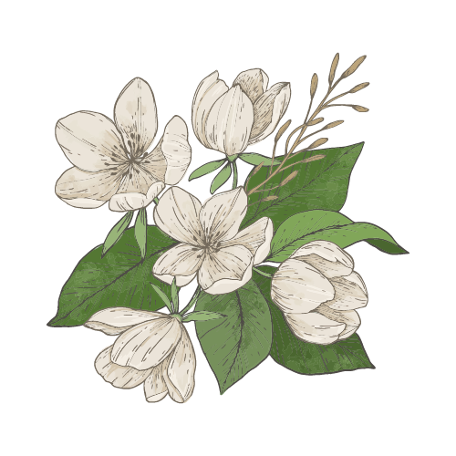

2024-07-10
"목련꽃 낙화"
- 나태주 시집, 꽃을 보듯 너를 본다.

너 내게서 떠나는 날
꽃이 피는 날이었으면 좋겠네
꽃 가운데서도 목련꽃
하늘과 땅 위에 새하얀 곷등
밝히듯 피어오른 그런
봄날이었으면 좋겠네
너 내게서 떠나는 날
나 울지 않았으면 좋겠네
잘 갔다 올라고 다녀오라고
하루치기 여행을 떠나는 사람
가볍게 손 흔들듯 그렇게
떠나보냈으면 좋겠네
그렇다 해도 정말
마음속에서는 너도 모르게
꽃이 지고 있겠지
새하얀 목련꽃 흐득흐득
울음 삼키듯 땅바닥으로
떨어져 내려 않겠지
이 시는 이별의 순간을 목련꽃이 피는 봄날에 비유하며, 이별이 슬프고
아프지만 그 순간조차도 아름답고 따뜻하게 기억하고 싶다는 소망을 담고
있습니다.
시인은 이별을 억지로 붙잡거나 슬픔에만 머무르지 않고, 상대를 위해 밝고
담담하게 보내주고 싶은 마음을 표현합니다.
겉으로는 담담해 보여도, 마음속 깊은 곳에서는 슬픔과 그리움이 조용히
피어나고 있다는 인간적인 진심이 드러납니다.
목련꽃이 떨어지는 모습은 이별의 아픔이지만, 그 아픔마저도 자연스러운
삶의 일부임을 받아들이는 태도를 보여줍니다.
이별의 순간에도 따뜻함과 품위를 잃지 말고, 슬픔을 억지로 감추지 말며
자연스럽게 받아들이자는 것, 그리고 아름다운 기억과 진심을 간직하며 삶의
이별과 만남을 담담하게 맞이하자는 메시지를 전합니다.
이 시는 이별의 아픔을 부정하거나 억누르지 않고, 그 슬픔마저도 삶의 한
부분으로 받아들이며, 이별의 순간에도 따뜻함과 아름다움을 잃지 않는
마음가짐을 우리에게 일깨워줍니다.